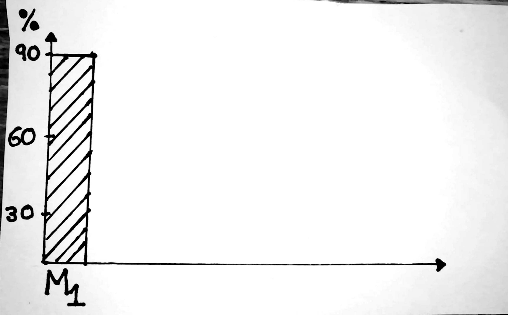
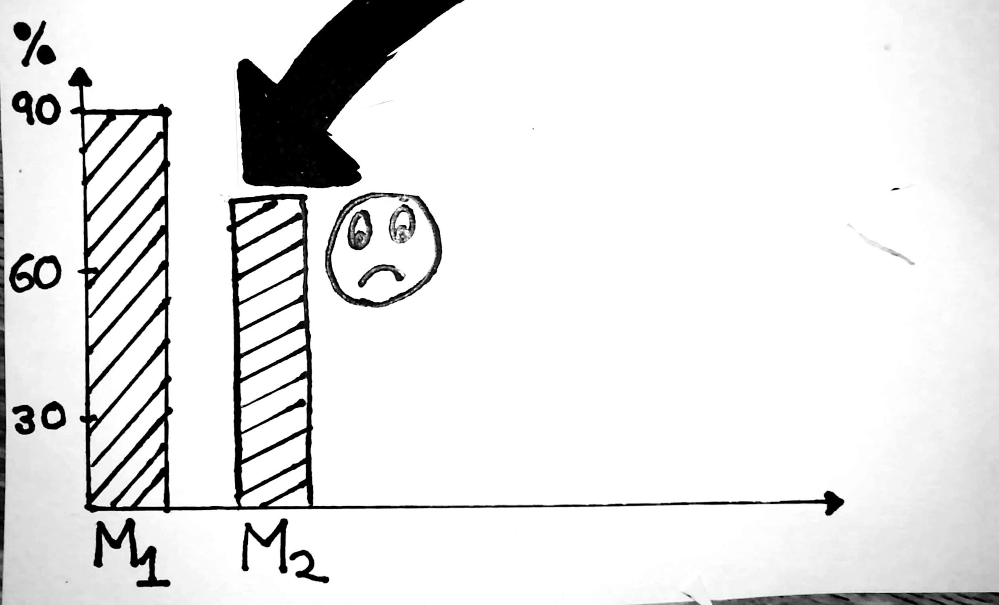
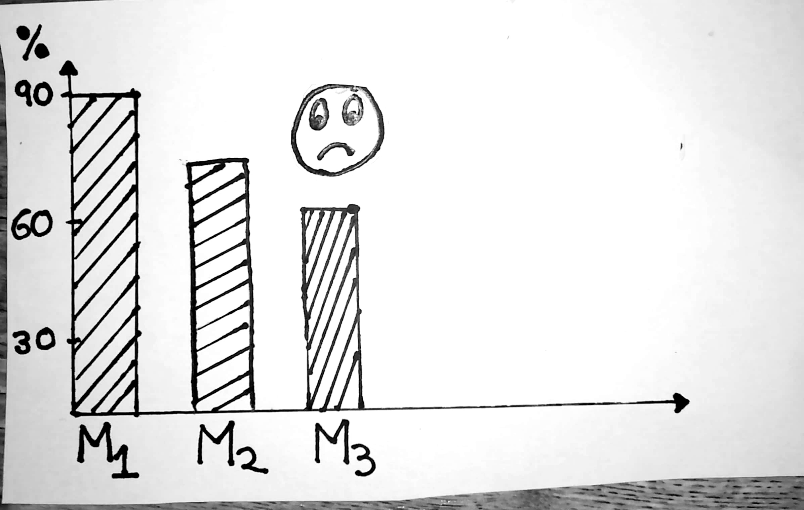

Let's Imagine there lived a man named Frankie.
Frankie created a startup and assembled a team to build "Post-Future"
The Idea behind "Post-Future" was using the app anyone can schedule posting content to social networks

Frankie spent 10,000 $ in developing the product and additional 2000 $ to market it.
Post-Future made a great start with 10000 users signing up in first month. Only 500 users cancelled there subscription in first month.
User Retention Rate - First Month
Frankie and his team were busy celebrating early success.
The success was not long lived as user retention rate fell down after second month. There were bad reviews by users as well.
User Retention Rate - Second Month
Frankie thought to spend more money in Marketing to acquire more users.
This helped for few days but after a month lot of users cancelled there subscription.
User Retention Rate - Third Month
Frankie should find where the problem is instead of spending more money on Marketing.
If we call a wrong number we will not get the answer we are looking for.
Lets keep going.
Frankie looked at the reviews posted by users and spoke with users and majority of issues fell into following categories:
- Product was difficult to use and understand
- There were so many steps to accomplish a simple task
- Sign up process was difficult and they gave up
Frankie and his team worked hard to make changes in the product.
It was hard to fix because some of the developers who worked initially left.
It took them 3 months to fix lot of issues that customers reported.
User Retention Rate - Sixth Month
As users stopped paying for subscription it was difficult to manage costs of server.
Frankie found it extremely hard to manage cash flow.
Cash Burn Rate
Frankie was forced to look into cash burnt from the beginning
Despite spending so much money chances of winning were getting weak.
Frankie's frustration was increasing day by day, his dream to build the company was failing in front of his eyes.
Unfortunately Frankie was forced to make hard decisions.
Frankie burned so much of cash that it was impossible to recover.
Most of the angel investors turned down his request and he didn't get any funding.
Frankie was forced to shut down his company.
Frankie was upset by his failure but deep inside he wanted to make a comeback.
He decided to share his story with his trusted college friend Keith.
Keith recently launched a ecommerce startup Flipmart which recently secured a series C funding.
Frankie and Keith sat for a while they reminisced old college days.
Afterwards Frankie shared the story with Keith about what wrong with "Post-Future"
Keith spent few minutes pondering what could have went wrong.
todo
Keith pointed out that problem lies in early stage when you were creating the product.
todo
A startup is busy in creating a product
If customers dont like the product they will reject it.
todo
A startup is busy in creating a product
Figuring out what customer wants and creating a product to meet those needs is where the challenge is.
Sitting inside the room and thinking about who are our customers, what do they do doesnt help much.
todo
DESIGN > DEVELOP > TEST > RELEASE
Most of the startups like Stripe,Airbnb etc have done extremely well in this area i.e. Design.
Mostly people think that design is how it looks but its much deeper, its how it works.
todo
A design process starts with understanding pain points of customer, getting into there lives and seeing the problem through there eyes.
Afterwards problem is defined "How might we", "How might we"
Team collectively ideates to solve the problem
A prototype is created and tested with users
TODO : Opportunity for smart animate all the phases come togethertodo
Its good to fail in design phase because you havent developed product. You are investing in prototypes which are cheap.
The goal of startup is to create experiences that customers would love. Remember you dont buy product you buy an experience.
The outcome: You know the product you are creating is it something that will delight the customer.
todo
This brought smile into Frankies phase, he thought that this is something he missed while building "Post-Future".
He thanked Keith and moved on to his journey
todo
Afterwards Frankie educates himself on User Experience Design Process
He reads case studies of how User Experience design helped in creating engaging prodcuts.
todo
Frankie was always annoyed with "Checkout" process in Grocery apps
Its a pain just to buy a packs of eggs I need to checkout and pay money.
Our own problems could be the true motivation in creating a product.
todo
Determined with the problem statement he thought this is something I can give my life to.
He himself started interviewing people around him.
Although none of the users knew that they were facing a problem but he was able to figure it our by there emotions.
Users were finding it extremely hard to shop groceries through "ZonNow" and "SmallBasket"
todo
Frankied realized that there is a problem.
He hired User Experience designers and they worked interviewing more users understanding pain point of a grocery app
todo
Frankie and his team were able to define the problem in a human centred way
How might we helps a user to quickly checkout grocery
todo
They came up with the idea that "Simply adding the item will place the order"
This idea sounded great but it created the problem of how to charge customers
todo
They came up with two ideas : #1. Charge customer at the end of month #2. Integrated wallet once it is topped up, it will deduct money automatically.
todo
Both the ideas were prototyped and team started it testing with users.
todo
They create a simple usability report for testing
Idea #2 of Integrated wallet is what customers liked the most.
todo
Frankie was convinced by looking at usability tests it would work. He named his app as "DailyBasket"
Only thing that was worrying him was money, during "Post-Future" he spent lot of money marketing which didnt yield him result.
todo
Back in high motivation, Frankie assembled the devlopment team.
He was lucky that some of the developers wanted to work with him again because of Frankies high spirit.
todo
While developers worked hard, Frankie did all the tie ups for grocery delivery.
Since all the designs were in place, it took development team less time to build the app.
todo
One of the features of the app was referrals , this was more like customer marketing the product themselves.
Frankie thought instead of spending on marketing if customers refer for a small incentive it will help him to acquire more users.
todo
For the first month they were able to acquire users by marketing in the apartments.
They had a descent start.
todo
Second month is where app started becoming viral.
Customers really liked the idea of no checkout process they started becoming addicted to DailyBasket because it made there life easy.
todo
During third month they added push notifications, using which users can add item quickly.
Competitors of DailyBasket were finding it hard to compete with them.
todo
By the end of six month there were so many users that Frankie had to start worrying about having more servers and scale.
When Frankie compared with users acquired and money spent he could not believe that the thinking of creating an engaging product combined with problem solving could be a huge success.
todo
This is how Frankie found the sweetspot of success
Imagine if you are Frankie what decision would you make to create products that will delight customers?
todo
Stories of Startup failure are very common.
Want to know more details about how you can utilize "User Experience Design Process" to win - Click here.